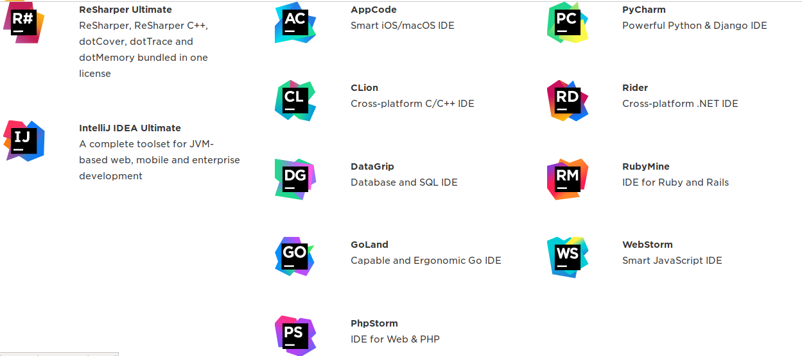

Introduction to CMake
Objectives
- Learn how to manage your project.
- Use CMake as a modern build system: high level and cross-platform.
- Use bitbucket for creating private repositories.
Introduction to CMake

CMake is set of tools used to automate laborious tasks, for example:
- Building (i.e compiling) your executables.
- Building libraries to be used in further projects.
- Testing your applications.
We can also make use of CMake to have a well-designed project hierarchy; it is a good practice to seperate your project files and folders into different parts:
- Application files (i.e those that contain
mainfunctions). - Library files. So far, our libraries are regarded as Header-only libraries, i.e our algorithms and data structures are all contained in
.hppfiles. - Datasets: it is a good practice to keep them isolated.
- Build files: from now on, we will generate our build files and executables in a separate folder.
The application files typically depends the library files. However, they are living in different folders, so we will describe a little about our project structure in the CMake script files. CMake script files have always a unique name, CMakeLists.txt.
An introductory tutorial on using CMake
Installation
First, you need to install the CMake program, using the following command:
sudo apt-get install cmake
Before we know CMake
Consider this repository, clone by the following command:
git clone https://github.com/sbme-tutorials/concrete-adt-ds.git
You have the following headers and source files:
| File | Type | Contents |
|---|---|---|
int_dlinkedlist.hpp |
header-only library | doubly-LL of integers |
int_linkedlist.hpp |
header-only library | singly-LL of integers |
int_q_array.hpp |
header-only library | Queue of integers using Array |
int_q_linkedlist.hpp |
header-only library | Queue of integers using LL |
test_int_dlinkedlist.cpp |
C++ source file w/ main function |
main function to test doubly-LL of integers |
| test_int_linkedlist.cpp | C++ source file w/ main function |
main function to test singly-LL of integers |
| test_int_q_array.cpp | C++ source file w/ main function |
main function to test Queue of integers using Array |
| test_int_q_linkedlist.cpp | C++ source file w/ main function |
main function to test Queue of integers using LL |
Consider the case when we are still in development phase, so each time we need to compile all source files by issuing the following commands:
g++ -std=c++11 -Wall test_int_dlinkedlist.cpp -o test_linkedlist
g++ -std=c++11 -Wall test_int_linkedlist.cpp -o test_linkedlist
g++ -std=c++11 -Wall test_int_q_array.cpp -o test_linkedlist
g++ -std=c++11 -Wall test_int_q_linkedlist.cpp -o test_linkedlist

It becomes a cumbersome task to build your project when you have a lot of applications. We also may realize also how confusing to have all source files, headers files, and the compiled files in the same place.
To address the aforementioned issues, we will:
- Organize our project into subdirectories.
- Write CMake script file that describes the skeleton of our project. So from now on, we build and compile all applications with a single-word command.
Organizing the project
Make the following directories:
include: to contain all the header-only libraries.apps: to contain all the C++ source files.build: to isolate our generated executables.
mkdir include
mkdir apps
mkdir build
Then move the corresponding files to their new subdirectories.
mv *.hpp include/
mv *.cpp apps/
Note that in a lot of bash commands you can use asterisk to match specific patterns of files. For example,
mv *.hpp include/will move all files ending with.hppto theincludefolder.
Now we obtain the following directories and files:
├── apps
│ ├── test_int_dlinkedlist.cpp
│ ├── test_int_linkedlist.cpp
│ ├── test_int_q_array.cpp
│ └── test_int_q_linkedlist.cpp
├── build
├── include
│ ├── int_dlinkedlist.hpp
│ ├── int_linkedlist.hpp
│ ├── int_q_array.hpp
│ └── int_q_linkedlist.hpp
├── issue.png
└── README.md
Our first CMake script
Create a new text file and name it CMakeLists.txt. CMake script files should be uniquely named CMakeLists.txt.
In the CMakeLists.txt file add the following lines:
cmake_minimum_required(VERSION 3.5 )
### c++11 standards
set(CMAKE_CXX_STANDARD 11)
set(CMAKE_CXX_STANDARD_REQUIRED ON)
set(CMAKE_CXX_EXTENSIONS OFF)
project( batman )
The first five lines describe important attributes in the project:
cmake_minimum_requiredto specify a minumum cmake version to run this script. This is used to maintain compatibility.- setting some first-class-citezen variables to declare our usage of the modern C++11 standard. The
settakes two parameters seperated by a space. The first parameter is the variable name, while the second parameter is the value of that variable. Further and advanced details about CMake native variables at CMake useful variables. You can also make custom variables to be used and referred in different parts of CMake script. For this small task, we won’t need to make custom variables in the CMake script. projecthere we give a name to our project.
Afterwards, let’s define the structure of our project by the following lines:
include_directories( include )
add_executable( test_dll apps/test_int_dlinkedlist.cpp )
add_executable( test_sll apps/test_int_linkedlist.cpp )
add_executable( test_qarray apps/test_int_q_array.cpp )
add_executable( test_qll apps/test_int_q_linkedlist.cpp )
include_directorycmake function takes multiple parameters. Here we introduced onlyincludeas a parameter. This command allows the project C++ source files to include any header file in theincludedirectory. However, the source files and header files are still seperated and living in different locations.add_executablecmake function takes two parameters: the executable (target) name, and the corresponding.cppfile to compile.
Life after CMake
Now go to the build folder and let the cmake program installed on your machine to run the CMakeLists.txt file that lives in the upper directory:
cd build
cmake ..

Now, from now on, build everything with a single command:
make

Now, after a fancy build progress log is finished, you will realize your executables are generated in the build directory.
NEVER add the build directory to the repository. It is pointless having your generated files on the remote repository. Only provide your codes, data, and the CMake scripts.
The final individual task
- You are required to gather all your works in the course tasks in a single project.
- Organize your project into four directories:
include,apps,data, andbuild. - You need to push your project on a repository at bitbucket, not github, until further notice.
Project Hierarchy
Header Files
Make a folder to contain all your header files naming it include.
mkdir include
Copy header files (i.e .hpp files) you have developed throughout the course, and rename any files like member1.hpp to representative name (e.g stack_ll.hpp).
Source Files
Make a folder to contain all your source files (i.e those that contain a main function)
mkdir apps
Copy the source files (i.e .cpp files) associated with your tasks in apps folder.
Data Files
Keep your datasets in a seperate folder data.
mkdir data
Build Files
When building your application, you need to isolate the generated files and executable away from the source code; create a dedicated folder for build files.
mkdir build
Resources: Intro to Build Systems
- Useful CMake Examples
- An introduction to build systems by Marwan Abdellah, Ph.D, Blue Brain Project, EPFL
Introduction to CMake from Kitware on Vimeo.
Next Tuesday
- Register an educational email.
- Obtain an intitutional license from Jetbrains.
- Enjoy for free a lot of priceless packages.

- Download and Install CLion using your license.
- We will learn how to load your project into CLion using CMake script.
- We will learn how to debug your program using CLion.